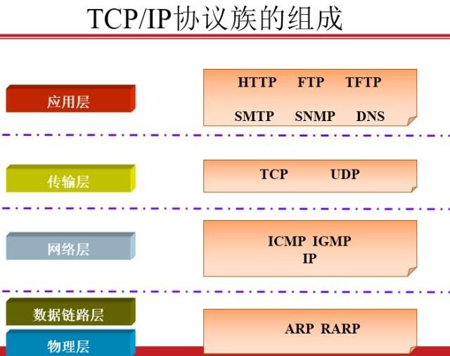
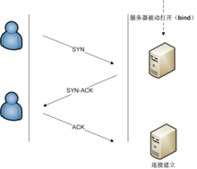
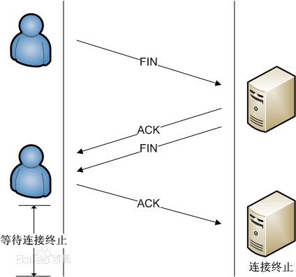

<pre>
老雷socket编程之常见网络协议


1.ip
	IP协议是将多个包交换网络连接起来，它在源地址和目的地址之间传送一种称之为数据包的东西，
	它还提供对数据大小的重新组装功能，以适应不同网络对包大小的要求。
	
2.TCP 传输控制协议
	TCP（Transmission Control Protocol 传输控制协议）是一种面向连接的、可靠的、基于字节流的传输层通信协议。
	TCP建立一个连接需要三次握手，而终止一个连接要经过四次握手
	
	连接：A:你好 B:你好 A:很高兴认识你。
	当主动方发出SYN连接请求后，等待对方回答SYN+ACK [1]  ，并最终对对方的 SYN 执行 ACK 确认。
	
	<div>
	
	</div>

3.UDP（User Datagram Protocol） 用户数据报协议
	一种无连接的传输层协议，提供面向事务的简单不可靠信息传送服务。

4.http 网站服务
	HTTP是一个简单的请求-响应协议，它通常运行在TCP之上。它指定了客户端可能发送给服务器什么样的消息以及得到什么样的响应。

5.websocket html5的即时通讯协议
	WebSocket是一种在单个TCP连接上进行全双工通信的协议.websocket可以一直连接，就像铺了一条管道一样，水可以一直流着。

</pre>